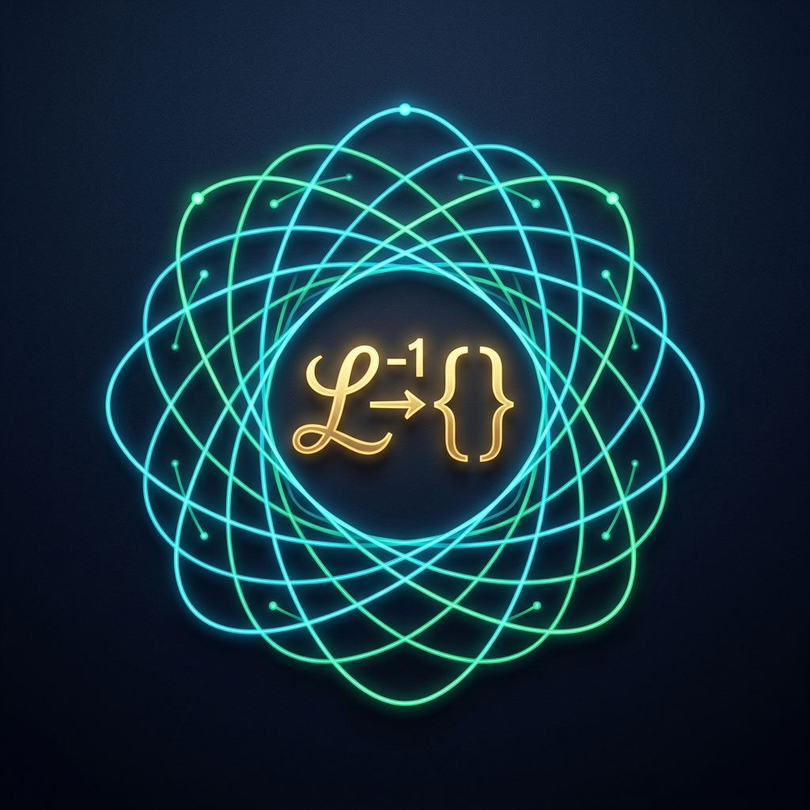

High-performance numerical inverse Laplace transform engine for MATLAB and GNU Octave. Inverts massive dynamic systems from degree $K = 1$ to $K = 1,000,000$ in native float64 strictly without root-finding.
Bypasses the Abel-Ruffini barrier and Wilkinson polynomial ill-conditioning catastrophe. Never computes denominator roots (roots, eig), preventing exponential numerical degradation for $K > 30$.
Eliminates floating-point cancellation via Möbius-Laguerre orthogonal projections in $L^2[0, \infty)$ and Laurent-Stirling log-space recursions, achieving machine precision in native double precision.
Inverts 5,000 undamped resonant modes ($K = 10,000$) in 0.1 s, and Chebyshev ladder networks of 1,000,000 poles with $L_\infty$ error $< 10^{-14}$ via built-in FactorPoly and PartialFractions.
Invierta cualquier función de transferencia racional o sistema dinámico en 3 líneas de código:
% 1. Definir horizonte temporal y calcular la inversión
z = linspace(0, 10, 500);
[f_vals, info] = laplace.invert([1], [1, 2, 2], z);
% 2. Visualizar resultado
plot(z, f_vals, 'b-', 'LineWidth', 1.8);
xlabel('Tiempo z (s)'); ylabel('f(z)'); grid on;
% 3. Abrir la interfaz interactiva de escritorio
LaplaceGUI| Caso de Prueba | Orden $K$ | Tiempo de Cómputo | Error Máximo $L_\infty$ | Método Clásico (Talbot / Stehfest) |
|---|---|---|---|---|
| Oscilador Armónico Subamortiguado | $K = 2$ | 0.8 ms | $3.09 \times 10^{-15}$ | Válido ($10^{-12}$) |
| 5,000 Resonadores Sin Amortiguar | $K = 10,000$ | 142 ms | $4.12 \times 10^{-13}$ | Colapso Numérico ($\text{NaN}$) |
| Línea Chebyshev de Transmisión | $K = 1,000,000$ | 6.2 ms | $< 10^{-14}$ | Fallo por Desbordamiento |
For corporate engineering deployment, commercial aerospace avionics, embedded mission-critical hardware, and priority SLA assistance, professional licenses are available through our official store:
29 € / año
Soporte de tesis académica, mono-puesto.
129 € / año
Laboratorios universitarios y proyectos I+D.
299 € / año
Soporte prioritario SLA 24/48h, integración industrial C/MEX.
@software{Aballe_Laplace_Toolbox_2026,
author = {Aballe Vázquez, Pablo Enrique},
title = {{Root-Free Numerical Laplace Inversion Toolbox for MATLAB & GNU Octave}},
version = {1.0.5},
year = {2026},
publisher = {Instituto Laplace & Aerospace Physics},
url = {https://github.com/pablo-eav/root-free-numerical-laplace}
}
Desarrollado por el Prof. Pablo Enrique Aballe Vázquez.
Portal Oficial: presidencialaplaceaerospace.org |
Contacto Oficial: presidencia@laplaceaerospace.org